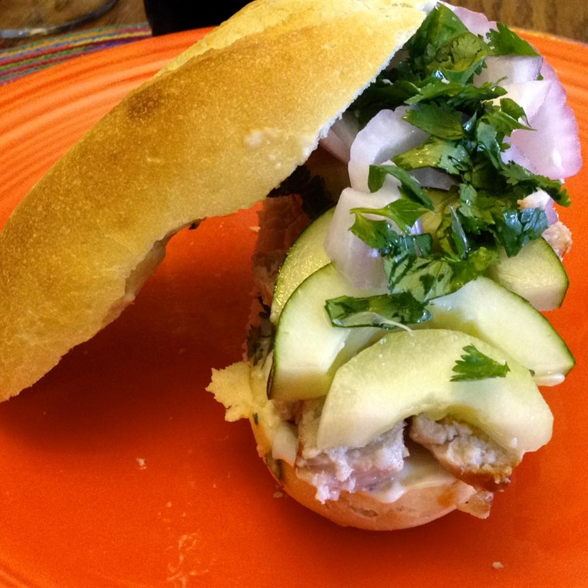

Vietnamese Sandwich Recipe

Description
Ingredients
- 4 boneless pork loin chops, cut ¼ inch thick
- 4 (7 inch) French bread baguettes, split lengthwise
- 4 teaspoons mayonnaise, or to taste
- 1 ounce chile sauce with garlic
- ¼ cup fresh lime juice
- 1 small red onion, sliced into rings
- 1 medium cucumber, peeled and sliced lengthwise
- 2 tablespoons chopped fresh cilantro
- salt and pepper to taste
Directions
-
Step 1
Preheat the oven's broiler. Place the pork chops on a broiling pan and set under the broiler. Cook for about 5 minutes, turning once, or until browned on each side.
-
Step 2
Open the French rolls and spread mayonnaise on the insides. Place one of the cooked pork chops into each roll. Spread chile sauce directly on the meat. Sprinkle with a little lime juice and top with slices
of onion, cucumber, cilantro, salt and pepper. Finish with another quick drizzle of lime juice.